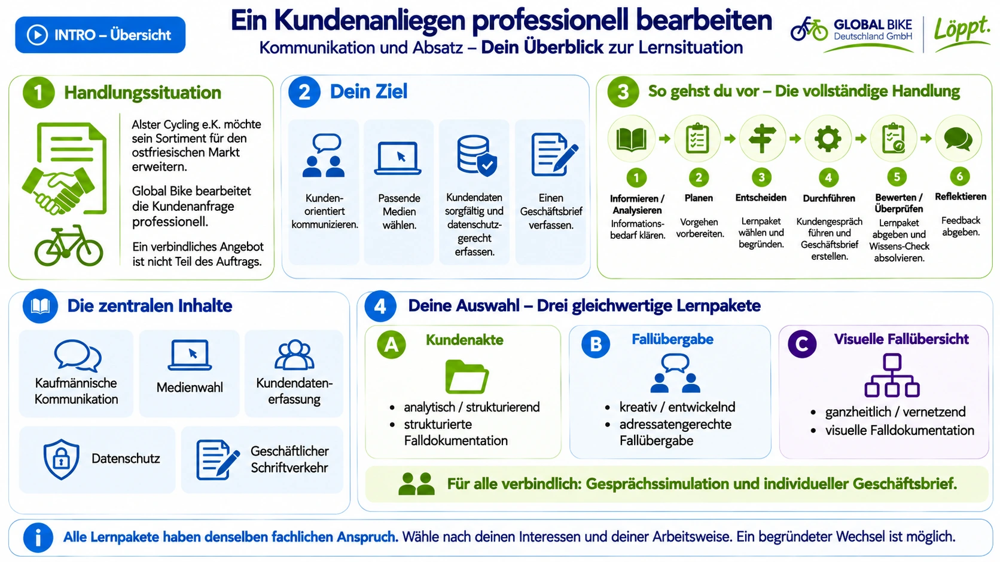
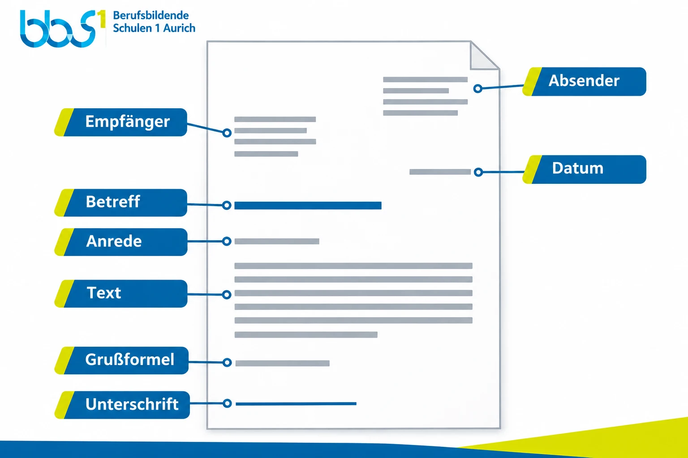

Anfrage und Stammblatt auswerten
Lies die Nachrichten in M1 und den Stammdatenauszug in M2. Halte fest, welche Angabe aus welcher Quelle stammt. Kennzeichne fehlende Daten und formuliere drei gezielte Rückfragen für den Kontakt.

Ein Fachhändler interessiert sich für ein neues Fahrrad. Wer im Einkauf zuständig ist, hat sich gerade geändert. Was kannst du schon beantworten und was müsstest du erst klären? Bei Global Bike bearbeitest du die Anfrage so, dass Emil Werner den Vorgang übernehmen kann.
Emil erhält deine Falldokumentation in der gewählten Form. Hinzu kommt pro Person der eigene, bearbeitbare Geschäftsbrief als DOCX. Im Gespräch übernimmt jede Person einmal die Auftragsbearbeitung.
Du entscheidest, welche Aufgaben du selbstständig oder mit anderen bearbeitest. Für die Rückmeldung erhält jede Person ein fremdes Produkt.
10 MinutenDie Gewichtung zeigt, wie häufig und wofür die Kompetenz in den Aufgaben gebraucht wird. 1 bedeutet „kurz in einer Aufgabe“, 6 „von der Vorbereitung bis zur Auswertung“.
| Kompetenz | Gewicht (1–6) | Was übe ich? |
|---|---|---|
| F · Fachkompetenz | 6 / 6 | Ich kläre ein Kundenanliegen, begründe die Medienwahl und verfasse eine sachgerechte Rückmeldung in Word. |
| P · Personalkompetenz | 5 / 6 | Ich kennzeichne offene Angaben und prüfe vor der Weitergabe, welche Daten der Betrieb benötigt. |
| S · Sozialkompetenz | 5 / 6 | Ich höre zu, kläre Rückfragen und gebe einer anderen Person am Produkt begründetes Feedback. |
| M · Methodenkompetenz | 5 / 6 | Ich ordne Informationen nach Quelle und Prüfstatus und leite die nächsten Arbeitsschritte ab. |
| D · Medienkompetenz | 5 / 6 | Ich wähle ein geeignetes Kommunikationsmedium und gestalte einen Geschäftsbrief in Word. |

Emil Werner arbeitet bei der Global Bike Deutschland GmbH in der Auftragsbearbeitung. Alster Cycling e.K. möchte sein Sortiment für den ostfriesischen Markt erweitern und interessiert sich für das silberne Deluxe Touringbike. Der Kunde bittet um Informationen und einen Abgleich der geschäftlichen Kontaktdaten. Emil hat schon kurz mit ihm telefoniert. Einige Fragen sind offen.
„Bitte übernehmen Sie die weitere Bearbeitung der Kundenanfrage. Klären Sie das konkrete Anliegen des Kunden, überprüfen Sie die für die weitere Bearbeitung benötigten Kundeninformationen und bereiten Sie eine professionelle schriftliche Rückmeldung vor.“
Emil braucht eine nachvollziehbare Übergabe. Ein verbindliches Angebot gehört erst in einen späteren Vorgang. Die beiden Nachrichten im Wortlaut findest du in M1.
10 MinutenSchau auf das Produkt und den neuen Absatzmarkt in der E-Mail.
Die E-Mail beschreibt eine Änderung im Einkauf.
Lies den internen Auftrag noch einmal und achte auf die Grenze des Auftrags.
Lies die Nachrichten in M1 und den Stammdatenauszug in M2. Halte fest, welche Angabe aus welcher Quelle stammt. Kennzeichne fehlende Daten und formuliere drei gezielte Rückfragen für den Kontakt.
Prüfe mit M3, M4 und M5, wie du Daten bestätigen und Ergebnisse schriftlich sichern kannst. Öffne die Bürovorlage. Ermittle, welche Felder du mit dem jetzigen Wissen ausfüllen könntest. Für Fachwörter nutze das Begriffsblatt.
Begriffsblatt zum Nachschlagen · Begriffe prüfen
Nutze nach Bedarf die Übungen Ü1 bis Ü4 oder vertiefe mit M3–M5 eine eigene Fallfrage. Für den Fachbegriffscheck stehen separat 20 Minuten bereit. Du kannst diese Zeit auch für das Begriffsblatt nutzen.
Material M8 · Freiwillig
Welche Erklärung passt zum Fachbegriff? Wähle bei jeder Karte eine Antwort. Die Rückmeldung zeigt dir, wie der Begriff im Kundenfall vorkommt. Du kannst deine Auswahl jederzeit ändern.
Richtzeit: 20 Minuten
Skizziere den Ablauf vom ersten Quellenvergleich über die Simulation bis zum Word-Brief. Trage Material, Zeit und erforderliche Absprachen ein. Nutze M1–M5. Plane ein, wer für das Übungsgespräch die Kundenrolle übernimmt.
Vergleiche Kundenakte, mündliche Übergabe und visuelle Übersicht. Überlege für jede Form, wie Emil eine Quelle, eine offene Frage und den nächsten Schritt finden kann. Halte die Unterschiede fest.
Emil erhält deine Falldokumentation in der gewählten Form. Hinzu kommt pro Person der eigene, bearbeitbare Geschäftsbrief als DOCX. Im Gespräch übernimmt jede Person einmal die Auftragsbearbeitung.
Wähle deine Produktform oben auf der Seite. Notiere einen Grund für deine Wahl und was Emil mit dem fertigen Produkt tun soll. Ein begründeter Wechsel ist möglich.
Entscheide, wie du den Kunden kontaktierst. Vergleiche zwei Medien anhand von M3. Beziehe dich auf die Dringlichkeit, nötige Rückfragen, schriftliche Nachvollziehbarkeit oder Vertraulichkeit und notiere die Begründung in deinem gewählten Format.
Emil erhält deine Falldokumentation in der gewählten Form. Hinzu kommt pro Person der eigene, bearbeitbare Geschäftsbrief als DOCX. Im Gespräch übernimmt jede Person einmal die Auftragsbearbeitung.
Entwirf anhand von M2 einen Einstieg, eine offene Frage und eine gezielte Rückfrage. Die Lehrkraft gibt die separate Kundenrollenkarte nur an die Person in dieser Rolle aus.
Führe die Simulation durch. Höre zu, fasse Ergebnisse zusammen und vereinbare den nächsten Schritt. Jede Person übernimmt einmal die Auftragsbearbeitung. Bei einer schriftlichen Kontaktstrategie dient das Gespräch als interne Übung.
Trenne die bestätigten Angaben von offenen Punkten. Prüfe die Erforderlichkeit angebotener Kontaktdaten mit M4. Verändere keine Stammdaten im ERP-System.
Verfasse mit der Word-Bürovorlage deine eigene Rückmeldung an Alster Cycling. Nimm Bezug auf die Anfrage, fasse bestätigte Ergebnisse zusammen und beschreibe das weitere Vorgehen. Markiere ungeklärte Angaben im Entwurf. Nutze die DIN-5008-Arbeitshilfe M5.
Ordne die Informationen aus M1, M2 und dem Gespräch in einer Kundenakte. Gliedere sie nach Anliegen, bestätigten Angaben, offenen Punkten und nächstem Schritt. Gib zu jeder Angabe die Quelle an. Zeige Emil an einem Beispiel, warum er einen Eintrag vor der Weiterverwendung prüfen muss.
Erstelle eine kurze Audioübergabe für Emil. Beginne mit dem Anliegen. Nenne den Stand des Gesprächs, begründe deine Medienwahl und schließe mit einem klaren nächsten Schritt. Markiere mündlich, welche Angaben offen sind. Ohne Aufnahmemöglichkeit gibst du dein selbst formuliertes Sprechmanuskript ab.
Verbinde Kundenwunsch, Quellen, geklärte Daten, offene Fragen und nächste Schritte in einer kommentierten Übersicht. Kennzeichne den jeweiligen Status durch Beschriftungen. Prüfe, ob Emil von einer offenen Frage zur passenden Zuständigkeit und zur nächsten Kontaktaufnahme gelangt.
Kontrolliere mit den Formatierungszeichen die Absätze sowie in der Druckvorschau Anschrift, Betreff und Seitenumbruch. Lies deinen Brief aus Sicht des Kunden. Speichere die bearbeitbare DOCX und das gewählte Lernprodukt.
Reiche deine Arbeit in der Moodle-Aktivität „Peer-Feedback“ ein. Verwende neutrale Titel und Dateinamen. Entferne Namen aus Text und Dateieigenschaften. Bei einem gemeinsamen Produkt reicht jede Person eine Kopie im eigenen Konto ein. Ohne eingerichtete Aktivität verteilt die Lehrkraft codierte Arbeiten.
Prüfe die dir zugeteilte Arbeit mit den Kriterien unten. Benenne eine konkrete Fundstelle, eine fachlich gelungene Stelle und einen begründeten Verbesserungsvorschlag. Gib die Rückmeldung in Moodle oder mit dem ausfüllbaren Peer-Bogen ab. Dein Name ist für die empfangende Person sichtbar.
Lies das Feedback zu deinem Produkt. Verbessere die genannte Stelle oder begründe am Material, weshalb du deine Fassung beibehältst. Ergebnis ist die für die weitere Verwendung geprüfte Fassung.
Fülle die Aktivität „Feedback“ im Moodle-Kurs aus. Melde zurück, welches Material geholfen hat, wo ein Auftrag unklar war, wie Zeit und Wahlmöglichkeiten passten und was wir ändern sollten. Verwende alternativ den ausfüllbaren Feedbackbogen und gib ihn wie vereinbart ab.
Kundenanfrage und Arbeitsauftrag
Rollenkarte und Kundenstammdaten
Professionelle Kundenkommunikation
Kundendaten erfassen und schützen
Word-Bürovorlage und DIN 5008
Freiwillige Vertiefung
Freiwillige Vertiefung
Freiwillige Vertiefung
Freiwillige Vertiefung
Bearbeitbarer Ausgangstext
Bearbeitbarer Ausgangstext
Bearbeitbarer Ausgangstext
Bearbeitbarer Ausgangstext
Bearbeitbarer Ausgangstext
Nachschlagen · Global Bike
Hier findest du Erklärungen und Beispiele zur Anfrage von Alster Cycling. Wähle einen Begriff oder springe vom Material direkt zur passenden Stelle.
Einstellungen für Ausrichtung, Abstände und Einzüge eines Absatzes.
Im Fall · Nutze in Word den Abstand nach einem Absatz, um im Brief den Hauptteil vom Schluss zu trennen. M5
Zurück zum MaterialAufmerksam zuhören, ausreden lassen und Verständnis sichern.
Im Fall · Greife im Gespräch den Wunsch nach Informationen zum Touringbike auf und fasse ihn mit eigenen Worten zusammen. M3
Zurück zum MaterialEine Frage, die zwischen genannten Möglichkeiten wählen lässt.
Im Fall · „Wünschen Sie Unterlagen per Post oder per E-Mail?“ bietet zwei Wege an. M3
Zurück zum MaterialFür ein Anliegen zuständige Person.
Im Fall · Für die weitere Korrespondenz musst du klären, wer bei Alster Cycling für den Einkauf zuständig ist. M2
Zurück zum MaterialKurze, aussagekräftige Benennung des Anliegens eines Schreibens.
Im Fall · Eine aussagekräftige Betreffzeile wäre „Ihre Anfrage zum Deluxe Touringbike in Silber“. M5
Zurück zum MaterialDaten entsprechen dem gegenwärtigen Stand.
Im Fall · Alster Cycling meldet veränderte Zuständigkeiten. Prüfe deshalb, ob ein vorhandener Geschäftskontakt noch aktuell ist. M4
Zurück zum MaterialBeschränkung personenbezogener Daten auf das erforderliche Maß.
Im Fall · Erfasse nur die Kontaktangaben, die Global Bike für die Rückmeldung an Alster Cycling braucht. M4
Zurück zum MaterialEin Kunde, dessen Forderungen die Buchhaltung unter einer Kundennummer führt.
Im Fall · Alster Cycling hat im Auszug die maskierte Nummer 11###. M2
Zurück zum MaterialSchreib- und Gestaltungsregeln für die Text- und Informationsverarbeitung.
Im Fall · Die Regeln helfen beim Aufbau der Rückmeldung an Alster Cycling, etwa bei der Gestaltung der Anschrift und der Betreffzeile. M5
Zurück zum MaterialBearbeitbares Word-Dateiformat.
Im Fall · Speichere deinen Geschäftsbrief in diesem Format, damit Text, Absätze und Betreff in Word weiter bearbeitet werden können. M5
Zurück zum MaterialAnsicht des Dokuments in der vorgesehenen Seitengestaltung.
Im Fall · Kontrolliere vor der Abgabe, ob die Anschrift vollständig sichtbar ist und ob der Brief auf die geplante Seite passt. M5
Zurück zum MaterialDatenschutz-Grundverordnung der Europäischen Union.
Im Fall · Beim Erfassen von Geschäftskontakten musst du unter anderem den Verwendungszweck und den Zugriff beachten. M4
Zurück zum MaterialMeist mit Ja, Nein oder kurzer eindeutiger Angabe beantwortbar.
Im Fall · „Geht es um das silberne Deluxe Touringbike?“ lässt eine bereits genannte Angabe bestätigen. M3
Zurück zum MaterialHöflicher Abschluss eines Schreibens.
Im Fall · „Mit freundlichen Grüßen“ schließt den Brief ab. Danach steht kein Komma. M5
Zurück zum MaterialMittel zur Übermittlung von Informationen.
Im Fall · Ein Anruf ermöglicht Rückfragen zum Kundenwunsch. Ob du zusätzlich schreibst, hängt von der nötigen Dokumentation ab. M3
Zurück zum MaterialGrundlegende, längerfristig benötigte Kundeninformationen.
Im Fall · Zum Datenbestand von Alster Cycling gehören der Firmenname und die im Auszug maskierte Debitorennummer. M2
Zurück zum MaterialErmöglicht eine ausführliche Antwort.
Im Fall · „Was möchten Sie über das Deluxe Touringbike in Silber erfahren?“ lässt Raum für eine ausführliche Antwort. M3
Zurück zum MaterialInformationen über eine identifizierte oder identifizierbare natürliche Person.
Im Fall · Eine geschäftliche E-Mail-Adresse fällt darunter, wenn sie eine bestimmte Person erkennen lässt. M4
Zurück zum MaterialEine Frage, die eine unklare Angabe genauer bestimmt.
Im Fall · „Was meinen Sie mit einer Erweiterung des Sortiments?“ präzisiert den Kundenwunsch. M3
Zurück zum MaterialInformationen und Vereinbarungen später schriftlich überprüfen können.
Im Fall · Emil Werner kann eine schriftliche Zusammenfassung auch nach dem Gespräch noch nachlesen. M3
Zurück zum MaterialEin Geschäftsbereich, der Produkte oder Leistungen einer Gruppe zuordnet.
Im Fall · Bei Alster Cycling sind im Stammdatenauszug die Sparten ZU und BI aufgeführt. M2
Zurück zum MaterialFestgelegte horizontale Position zur Ausrichtung von Text.
Im Fall · Nutze einen festgelegten Tabstopp, wenn du im Brief Text an einer bestimmten Stelle ausrichten möchtest. M5
Zurück zum MaterialEine Einheit im Vertrieb, die für Verkaufsvorgänge verantwortlich ist.
Im Fall · Im Auszug für Alster Cycling steht die Kennung DN01. M2
Zurück zum MaterialSchutz vor unbefugtem Zugriff und Offenlegung.
Im Fall · Eine Notiz mit personenbezogenen Angaben darf nur für zuständige Personen einsehbar sein. M4
Zurück zum MaterialDer Weg, über den ein Unternehmen seine Produkte an die Kundschaft verkauft.
Im Fall · In beiden Zeilen steht GH für den Vertriebsweg. M2
Zurück zum MaterialErhebung für festgelegte, eindeutige und legitime Zwecke.
Im Fall · Verwende die für diese Anfrage erhaltenen Kontaktdaten für deren Bearbeitung. Ein weiterer Zweck muss gesondert geprüft werden. M4
Zurück zum MaterialMaterial M1 · Global Bike

Material M2 · Global Bike
Global Bike Deutschland GmbH
Du übernimmst die Bearbeitung der Anfrage von Alster Cycling e.K. Dir liegen die Kundenanfrage, die interne Nachricht von Emil Werner und folgender Stammdatenauszug vor.
| Kundenname | Debitor | Verkaufsorganisation | Vertriebsweg | Sparte |
|---|---|---|---|---|
| Alster Cycling e.K. | 11### | DN01 | GH | ZU |
| Alster Cycling e.K. | 11### | DN01 | GH | BI |
Quelle: Stammdaten Global Bike.xlsx, Debitoren Stammdaten, Zeilen 4–5, Spalten A–E. Die Nummer ist in der Quelle maskiert. Kontaktdaten sind im vorliegenden Auszug nicht enthalten.
Deine Aufgabe ist es, das Kundenanliegen im Gespräch so weit zu klären, dass eine professionelle schriftliche Rückmeldung vorbereitet werden kann. Weitere Informationen erhältst du im Gespräch mit der Kundenvertretung. Gestalte das Gespräch eigenständig.
Im Auszug stehen Kundenstammdaten. Die aktuelle Ansprechperson und ihre geschäftlichen Kontaktdaten klärst du im Gespräch. Alle offenen Felder bleiben bis zur Bestätigung erkennbar.
Material M3 · Global Bike
Eine professionelle Kundenkommunikation trägt dazu bei, Missverständnisse zu vermeiden, Kundenanliegen zu verstehen und Vertrauen aufzubauen.
| Gesprächsregel | Bedeutung |
|---|---|
| Freundlich auftreten | Höflich und respektvoll kommunizieren. |
| Aktiv zuhören | Aufmerksamkeit zeigen und das Gegenüber ausreden lassen. |
| Verständlich sprechen | Klare und verständliche Formulierungen verwenden. |
| Gezielt nachfragen | Fehlende Informationen ermitteln und Unklarheiten beseitigen. |
| Sachlich bleiben | Auch bei schwierigen Gesprächen ruhig reagieren. |
| Ergebnisse sichern | Wichtige Informationen und Vereinbarungen zusammenfassen. |
| Zuverlässig handeln | Keine ungesicherten Zusagen machen. |
Der Gesprächsablauf bietet Orientierung. Je nach Gesprächssituation können einzelne Schritte unterschiedlich umfangreich sein.
Durch geeignete Fragen lassen sich Informationen gezielt gewinnen.
| Frageart | Funktion | Allgemeines Beispiel |
|---|---|---|
| Offene Frage | Ausführliche Informationen erhalten | Was ist Ihnen besonders wichtig? |
| Geschlossene Frage | Eine Information bestätigen | Ist das korrekt? |
| Alternativfrage | Zwischen Möglichkeiten unterscheiden | Bevorzugen Sie A oder B? |
| Rückfrage | Unklarheiten beseitigen | Wie genau meinen Sie das? |
Unternehmen nutzen unterschiedliche Kommunikationsmedien für den Austausch mit Kunden.
Telefon: Ermöglicht einen direkten Austausch und schnelle Rückfragen. Wichtige Gesprächsergebnisse müssen gegebenenfalls zusätzlich dokumentiert werden.
E-Mail: Ermöglicht einen zeitunabhängigen, schriftlich nachvollziehbaren Informationsaustausch. Rückfragen können die Bearbeitung verlängern.
Persönliches Gespräch: Ermöglicht einen unmittelbaren Austausch. Auch Körpersprache und Mimik können wahrgenommen werden. Ein gemeinsamer Termin ist erforderlich.
Geschäftsbrief: Eignet sich für formelle und schriftlich nachvollziehbare Mitteilungen. Ein unmittelbarer Austausch ist nicht möglich.
Videokonferenz: Ermöglicht einen persönlichen Austausch über größere Entfernungen. Technische Voraussetzungen müssen erfüllt sein.
Die Eignung eines Kommunikationsmediums hängt von verschiedenen Faktoren ab:
Auch die Kombination verschiedener Kommunikationsmedien kann sinnvoll sein.
Aktives Zuhören und passende Fragen helfen dir beim Klären der Anfrage. Überlege, welches Kommunikationsmedium du dafür einsetzen möchtest. Für die Übergabe an Emil Werner ist die schriftliche Nachvollziehbarkeit wichtig.


Material M4 · Global Bike
Unternehmen benötigen Kundeninformationen, um Kundenanliegen zu bearbeiten und Geschäftsbeziehungen zu pflegen.
| Datenbereich | Beispiele |
|---|---|
| Unternehmensdaten | Firmenname, Geschäftsanschrift |
| Kontaktdaten | Ansprechperson, Telefonnummer, E-Mail-Adresse |
| Geschäftsdaten | Kundennummer, bisherige Geschäftsvorgänge |
| Anliegenbezogene Daten | Produktinteresse, Kundenwünsche, Vereinbarungen |
Welche Daten benötigt werden, hängt vom jeweiligen Geschäftsvorgang ab.
Kundeninformationen müssen zuverlässig sein, damit sie im Unternehmen weiterverwendet werden können.
| Anforderung | Bedeutung |
|---|---|
| Richtigkeit | Die Angaben entsprechen den tatsächlichen Informationen. |
| Vollständigkeit | Alle für den Vorgang erforderlichen Angaben liegen vor. |
| Aktualität | Die Informationen entsprechen dem aktuellen Stand. |
| Nachvollziehbarkeit | Herkunft und Bedeutung der Angaben sind erkennbar. |
| Zweckmäßigkeit | Es werden nur benötigte Informationen erfasst. |
Fehlende oder unbestätigte Informationen dürfen nicht durch Vermutungen ersetzt werden.
Personenbezogene Daten sind Informationen, die sich auf eine identifizierte oder identifizierbare natürliche Person beziehen.
Dazu gehören beispielsweise:
Auch geschäftliche Kontaktdaten können personenbezogene Daten sein, wenn sie einer bestimmten Person zugeordnet werden können.
Die Datenschutz-Grundverordnung (DSGVO) regelt den Umgang mit personenbezogenen Daten.
| Grundsatz | Bedeutung im Arbeitsalltag |
|---|---|
| Rechtmäßigkeit und Transparenz | Daten dürfen nur auf einer zulässigen Grundlage und nachvollziehbar verarbeitet werden. |
| Zweckbindung | Daten werden für festgelegte Zwecke verwendet. |
| Datenminimierung | Es werden nur erforderliche Daten verarbeitet. |
| Richtigkeit | Personenbezogene Daten müssen sachlich richtig und erforderlichenfalls aktuell sein. |
| Speicherbegrenzung | Daten dürfen nicht länger als notwendig gespeichert werden. |
| Integrität und Vertraulichkeit | Daten müssen vor Verlust und unbefugtem Zugriff geschützt werden. |
| Rechenschaftspflicht | Das Unternehmen muss die Einhaltung der Grundsätze nachweisen können. |
Datenschutzgerechtes Verhalten
Datenschutzrisiken
Die wesentlichen rechtlichen Grundlagen sind:
Weiterführende Quelle: Datenschutz-Grundverordnung – EUR-Lex
Für die Anfrage ist die Datenaktualität wichtig. Prüfe bei Angaben zu einzelnen Menschen, ob es sich um personenbezogene Daten handelt. Beachte die DSGVO, besonders Zweckbindung, Datenminimierung und Vertraulichkeit.

Material M5 · Global Bike
Nutze die betriebliche Vorlage für deine schriftliche Rückmeldung an Alster Cycling. Lass fehlende Angaben als Platzhalter stehen.
Word-Vorlage herunterladen (DOCX)
Die DIN 5008 enthält Schreib- und Gestaltungsregeln für die Text- und Informationsverarbeitung. Sie unterstützt lesbare, einheitliche Geschäftskorrespondenz; sie ersetzt keine gesetzlichen Pflichtangaben. Bezugsstand für diese Unterrichtsfassung: DIN 5008:2020-03. Die folgenden Regeln sind eine didaktische Auswahl, keine vollständige Normprüfung.
| Element | Gestaltung und Prüfung |
|---|---|
| Anschrift | Empfänger, Straße und Hausnummer, Postleitzahl und Ort in getrennten Zeilen; keine Leerzeile vor dem Ort. Fehlende Angaben kennzeichnen. |
| Datum | Einheitlich und eindeutig, beispielsweise 03.02.2027 (nur Formatbeispiel). |
| Betreff | Kurz, aussagekräftig, fett; ohne vorangestelltes Wort Betreff und ohne abschließenden Punkt bei einer bloßen Betreffzeile. |
| Anrede | Höflich, mit Komma; anschließender Text beginnt klein, sofern kein ohnehin großzuschreibendes Wort folgt. |
| Brieftext | Sinnabschnitte durch Absatzabstände trennen, linksbündig und einheitlich gestalten. |
| Grußformel | Eigener Absatz, ohne abschließendes Satzzeichen. |
| Anlagen | Nur tatsächlich beigefügte Unterlagen aufführen. |
| Pflichtangaben | Betriebliche Vorlage nutzen; fehlende Angaben nicht erfinden. |

Übung Ü1 · Freiwillig
Übe anhand von vier unabhängigen Situationen. Wähle jeweils eine Antwort. Du erhältst zu jeder Auswahl eine fachliche Rückmeldung und kannst die Übung wiederholen.
Übung Ü2 · Freiwillig
Übe anhand von vier unabhängigen Situationen. Wähle jeweils eine Antwort. Du erhältst zu jeder Auswahl eine fachliche Rückmeldung und kannst die Übung wiederholen.
Übung Ü3 · Freiwillig
Übe anhand von vier unabhängigen Situationen. Wähle jeweils eine Antwort. Du erhältst zu jeder Auswahl eine fachliche Rückmeldung und kannst die Übung wiederholen.
Übung Ü4 · Freiwillig
Ein Händler hat allgemeine Produktunterlagen angefordert. Für diesen Übungsfall liegen die Unterlagen zum Beifügen bereit. In der Word-Datei hat sich eine Reihe von Fehlern eingeschlichen.
Fehlerhaften Brief öffnen (DOCX)
Vergleiche Aufbau, Formatierung und Formulierungen mit dieser möglichen Fassung. Auch andere kundenorientierte Formulierungen können passen.
Prüfen Sie das zugeteilte Handlungsprodukt anhand der gemeinsamen fachlichen Kriterien. Eine Fundstelle kann eine Textzeile, ein Bildausschnitt oder eine Zeitmarke in der Übergabe sein.
Wie lief die Arbeit an der Lernsituation „Ein Kundenanliegen professionell bearbeiten“? Beschreiben Sie Ihre Erfahrungen so konkret, dass die Lehrkraft den nächsten Durchgang daran anpassen kann.